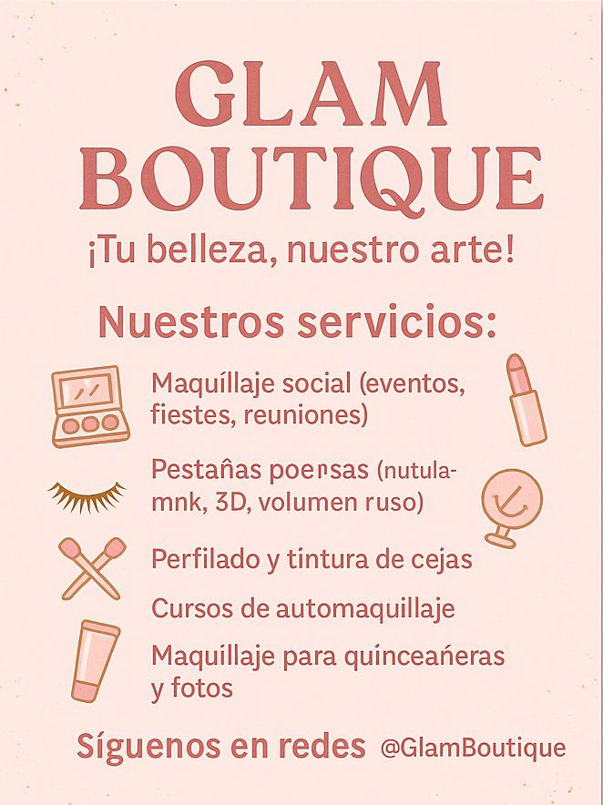
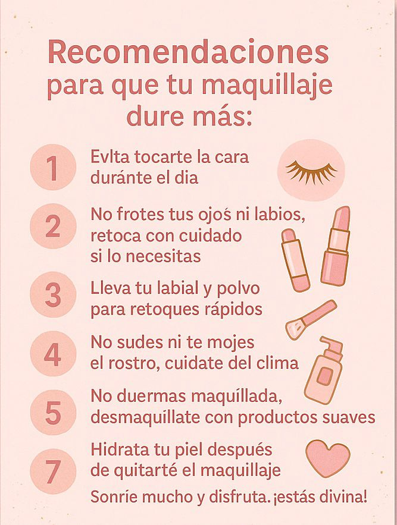

|
|
|
|
| INICIO | MISION | VISION | PRODUCTOS | CONTACTENOS |
|
SERVICIOS
RECOMENDACIONES | |
|
1 Maquillaje social – Para fiestas, cumpleaños, cenas, etc.
2 Maquillaje de novia – Elegante, duradero y personalizado.
3 Maquillaje artístico – Ideal para sesiones de fotos o eventos temáticos.
4 Aplicación de pestañas postizas – Naturales, 3D, volumen ruso o mink.
5 Diseño y perfilado de cejas – Con pinza, cera o hilo.
6. Tintura de cejas y pestañas – Para realzar la mirada sin maquillaje.
7 Cursos básicos de automaquillaje – Aprende a maquillarte como toda una pro.
8. Maquillaje para quinceañeras – Dulce, delicado y juvenil.
9. Maquillaje para fotografía y video – Profesional y duradero bajo luces.
10. Kit personalizado de productos – Asesoría para armar tu propio kit de maquillaje.
 |
1. No toques mucho tu rostro
– Evita tocarte la cara con las manos para no mover el maquillaje ni pasar grasa o suciedad.
2. Lleva papelitos absorbentes o polvo compacto
– Si te brilla la cara durante el día, usa papelitos matificantes o un poquito de polvo, sin recargar.
3. Evita el agua o el sudor
– Trata de no sudar demasiado ni mojarte la cara. Si llueve, cúbrete bien.
4. No te talles los ojos ni la boca
– El maquillaje de ojos y labios es delicado, ¡cuídalo!
5. Lleva tu labial para retocar
– Es normal que el labial se vaya con los besos o la comida, así que es bueno tenerlo a la mano.
6. Si lloras… hazlo con estilo
– Da toquecitos suaves con un panuelo, ¡nada de restregar!
7. No duermas con el maquillaje
– Aunque esté muy bonito, hay que quitárselo bien en la noche para no danar la piel.
8. Usa desmaquillante suave
– Dile adiós al maquillaje con productos buenos y sin maltratarte la cara.
9. Hidrata tu piel después de desmaquillarte
– El maquillaje puede resecar, así que es clave aplicar cremita al final del día.
10. Para eventos largos… trae un mini kit
– Un espejito, polvo, labial y pestanina pueden salvarte si algo se mueve.
.
 |
Direccion:Mz 19 casa 84 Arboleda Campestre- Mz 3 casa 38 poblado campestre
Contactos:3225463997-3218039534
correo electronico:cabreracardozalaurastefanny@gmail.com - samanthaorozcotecnologia@gmail.com